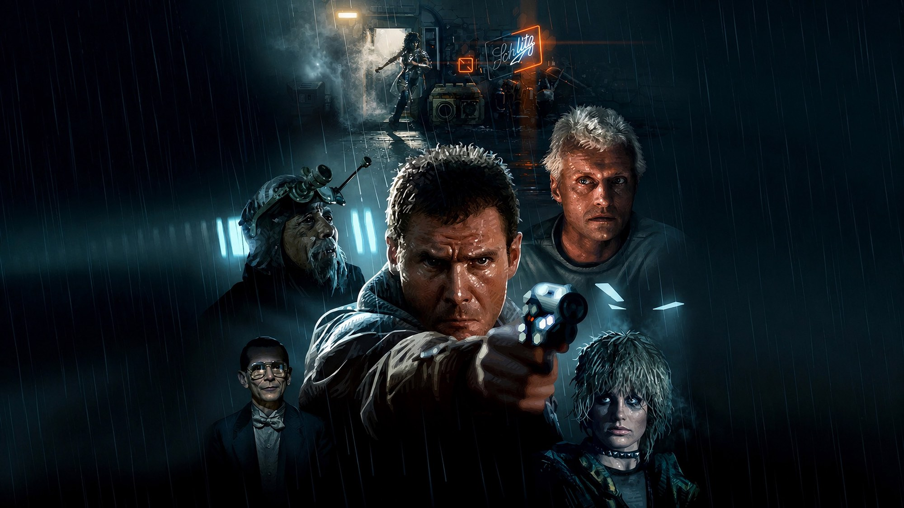
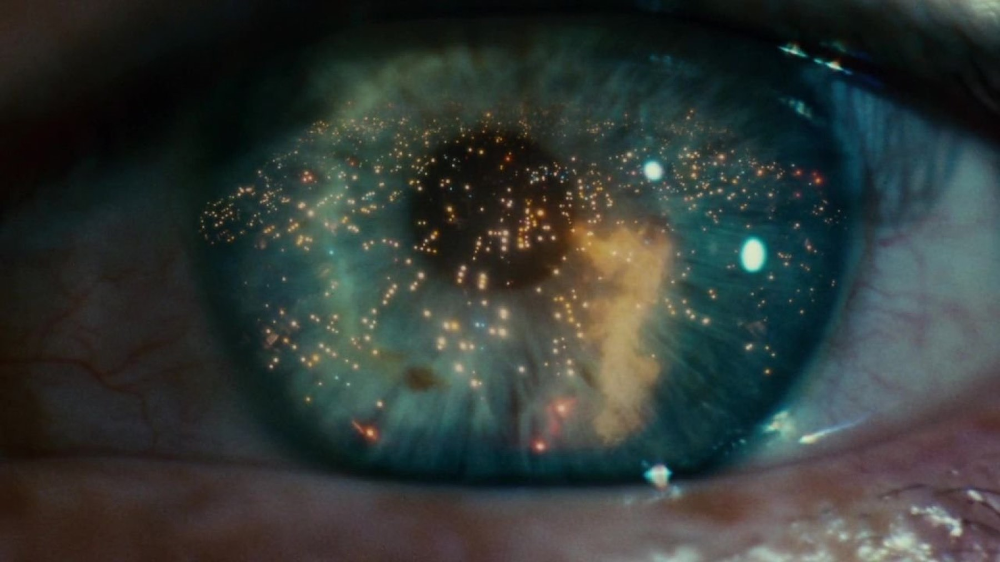

Blade Runner, «lacrime nella pioggia» (spoiler)
Una scena che vale per quello che toglie: cosa dice il monologo di Roy Batty in italiano, cosa tagliò Rutger Hauer e cosa cambia tra doppiaggio e originale
Il monologo di Roy Batty funziona per quello che toglie, non per quello che dice. Nella scena finale di Blade Runner restano due immagini senza spiegazione e una frase sola, perché tutto il resto lo aveva tagliato l'attore la sera prima di girare. Da qui in poi parliamo del finale del film.
Le battute, nel doppiaggio italiano
Nella scena doppiata, con la voce di Sandro Iovino, Roy comincia con «Io ne ho viste cose» e aggiunge che i «voi umani» non potrebbero immaginarle. Poi nomina due luoghi: «navi da combattimento in fiamme» vicino ai «bastioni di Orione» e i «raggi B» che balenano nel buio, non lontano dalle «porte di Tannhäuser». Poi la scena prende fiato, e solo dopo arriva la chiusa: tutti quei momenti andranno perduti, «come lacrime nella pioggia». Ultima battuta: «È tempo di morire.»
La prima metà mette sul tavolo una battaglia e un luogo buio, ma non spiega nessuno dei due. La seconda dice la sola cosa che conta: tutto questo sparirà con lui.

Doppiaggio e originale: cosa si guadagna e cosa si perde
In inglese Roy si rivolge a «you people», gente. Il «voi umani» del doppiaggio è più netto, perché segna il confine tra lui e chi ascolta già nella prima riga e prepara la fine. Poi le navi sono «off the shoulder of Orion», cioè davanti alla spalla della costellazione, mentre da noi diventano «bastioni»: si guadagna un tono marziale e solenne, ma si perde il corpo. Per un discorso detto da qualcuno che sta per morire, una spalla di cielo era un'immagine più intima di una fortezza. I «raggi B» sono invece una resa fedele di «C-beams», e come l'originale non spiegano niente. È una nostra lettura di due battute, non un giudizio sul lavoro di chi ha tradotto.
Cosa tagliò Rutger Hauer
Il testo scritto da David Peoples era più lungo, ma anche più pieno di scenografia che di sentimento: navi d'attacco in fiamme al largo della spalla di Orione e raggi C vicino alla Porta di Tannhäuser. Era una lista di meraviglie, più descrittiva che intima, e per questo meno adatta a un uomo che sta morendo.
Hauer rimaneggiò il discorso la sera prima delle riprese, tagliando gran parte del testo e aggiungendo una sola riga, quella sui momenti che si perdono nel tempo e che finisce con «tears in rain». Ridley Scott gli aveva detto di portare qualunque cosa avesse trovato, e che l'avrebbe usata se gli fosse piaciuta. Hauer cercava parole con cui Roy potesse consegnare agli altri un frammento di quello che aveva sentito in vita.
Il nostro parere è netto: il taglio vale più dell'aggiunta, però va capito perché. Tolte le navi in fiamme e la spalla di Orione descritte per intero, restano due immagini che nessuno ha mai visto. Ciascuno se le costruisce da solo, ma con un'emozione in più, perché le sente come ricordi di Roy e non come effetti speciali. Le porte di Tannhäuser richiamano probabilmente l'opera di Wagner, ma il film non lo dice, e i raggi B non hanno alcuna definizione. Un discorso che spiega meno ci coinvolge di più, perché ci lascia il lavoro di immaginare.
Sul tetto la battuta cambia peso
Da sola la battuta sarebbe una massima. Lassù, sotto la pioggia, ha un peso diverso: Roy ha appena salvato Deckard da una caduta mortale: il capo dei replicanti, che Deckard doveva eliminare, è adesso l'unico a poter lasciare i suoi ricordi a qualcuno. Quando parla non sta spiegando niente a un nemico, sta consegnando la sua memoria a chi uscirà vivo da lì. Una colomba bianca accompagna la sua morte.
Qui sta anche il punto debole, nel nostro giudizio: la colomba è il simbolo più sottolineato della scena, più esplicito del discorso stesso. Il monologo funziona perché lascia vuoti da riempire, mentre l'uccello bianco chiude quegli spazi con un segno troppo chiaro. Preferiamo la scena senza di lui, però non è un difetto che la rovini, perché il discorso ha già fatto il suo lavoro.
I numeri, in un solo paragrafo
La versione finale del monologo conta 42 parole in inglese. Il film dura 118 minuti e uscì negli Stati Uniti il 25 giugno 1982 in 1.290 sale: costò circa 30 milioni di dollari e ne incassò 41,8, andando male al botteghino e dividendo la critica. In Italia arrivò il 14 ottobre 1982, dopo le proiezioni al Fantafestival a giugno e alla Mostra di Venezia a settembre. Nel 1993 la Library of Congress lo scelse per il National Film Registry. Rutger Hauer morì il 19 luglio 2019, a 75 anni, a Beetsterzwaag, nei Paesi Bassi.
A chi lo consigliamo, e a chi no
Lo consigliamo a chi ama la fantascienza lenta e notturna, e a chi vuole capire da dove vengono mille citazioni che girano per la rete. Non lo consigliamo a chi cerca azione continua, perché il ritmo è quello di un film che si prende il suo tempo. Chi conosce il monologo solo dai social ne ha visto la metà, ma crede di averlo capito tutto, perché in un video isolato perde il peso del tetto, della pioggia e di tutto ciò che lo precede.
Dove vederlo
Blade Runner è in abbonamento su Amazon Prime Video e Now TV, mentre a noleggio lo trovate su Timvision e Amazon Video, a ottobre 2026. Nelle sale italiane circolò anche in versioni diverse nel tempo: la Director's Cut al Torino Film Festival nel 1992 e il Final Cut a Venezia nel 2007, quindi conviene controllare quale edizione trovate sulla piattaforma.
Una scena che ricordiamo per quello che non dice: Hauer toglie la scenografia e lascia due immagini e una frase. Il doppiaggio italiano la rende più solenne e meno intima, però regge, perché la chiusa arriva intatta. Il solo neo è la colomba, un segno di troppo in una scena che stava in piedi anche senza.
Domande frequenti
Chi ha scritto il monologo «lacrime nella pioggia»?
Il testo di partenza è di David Peoples, uno degli sceneggiatori. Rutger Hauer lo accorciò molto la sera prima delle riprese e aggiunse la frase sulle lacrime nella pioggia, che nella sceneggiatura non c'era.
Cosa sono i raggi B e le porte di Tannhäuser?
Il film non lo spiega. «Tannhäuser» richiama probabilmente il cavaliere medievale dell'opera di Wagner, mentre i «raggi B» (in inglese «C-beams») restano un'invenzione senza definizione. È un mistero voluto, che lascia allo spettatore il compito di immaginare.
Chi doppia Roy Batty in italiano?
Nel doppiaggio italiano Rutger Hauer ha la voce di Sandro Iovino, mentre Harrison Ford è doppiato da Michele Gammino.
Dove vedere Blade Runner in Italia?
A ottobre 2026 risulta in abbonamento su Amazon Prime Video e Now TV, mentre per il noleggio ci sono Timvision e Amazon Video. Le piattaforme cambiano spesso catalogo.